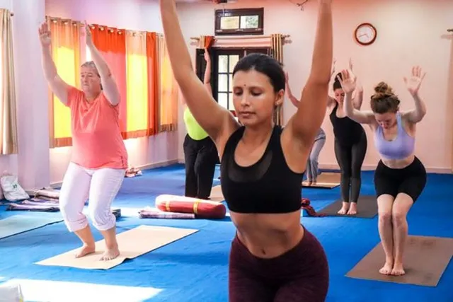
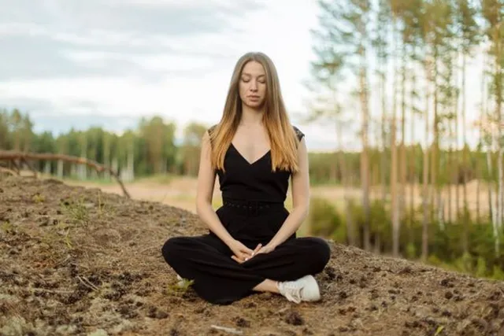
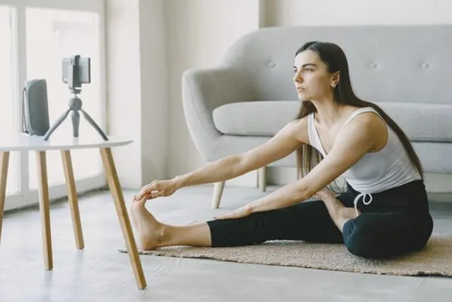
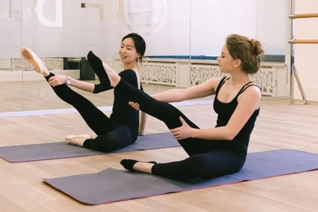
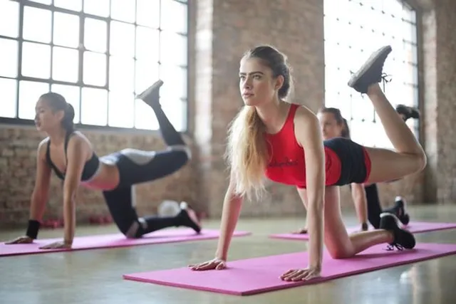
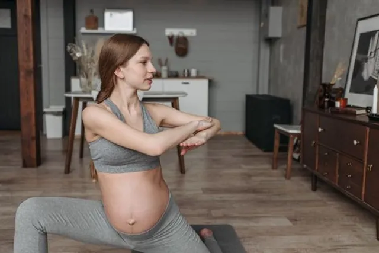
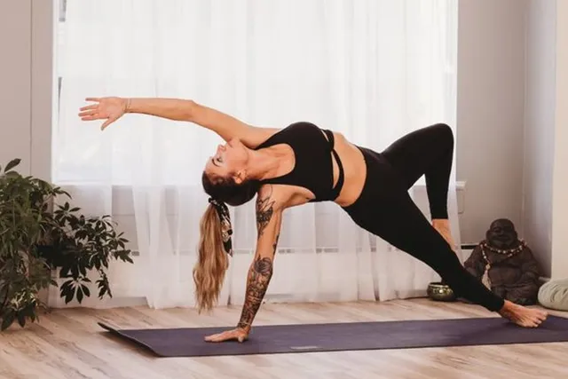
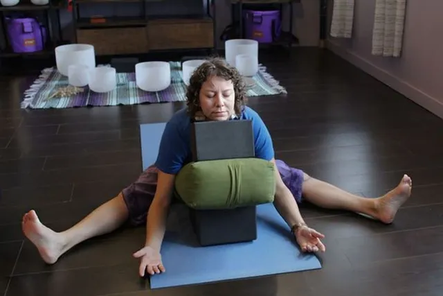

- Home
- Classes
Our classes.
Eight styles, from restful to energetic. Not sure where to start? Take the two-minute quiz.
Level
Energy

Beginner
Hatha Basics
Learn the foundations of yoga, one pose at a time

All levels
Guided Meditation
Thirty minutes to arrive, breathe and let go

Beginner
Morning Mobility
Wake up your joints before the day begins

All levels
Mat Pilates
Precise core work for posture and strength

Intermediate
Power Vinyasa
A strong, sweaty class that works the whole body

All levels
Prenatal Yoga
Safe, supportive movement for every trimester

All levels
Vinyasa Flow
Breath-led movement that builds heat and calm together

All levels
Yin and Restore
Slow, supported stretches held for minutes at a time
No classes match. Try a different level or energy.